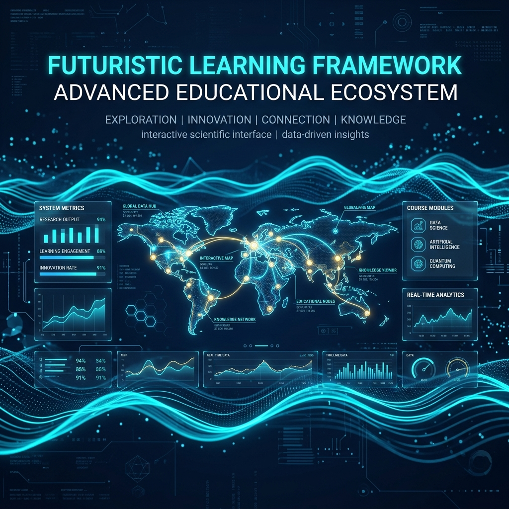
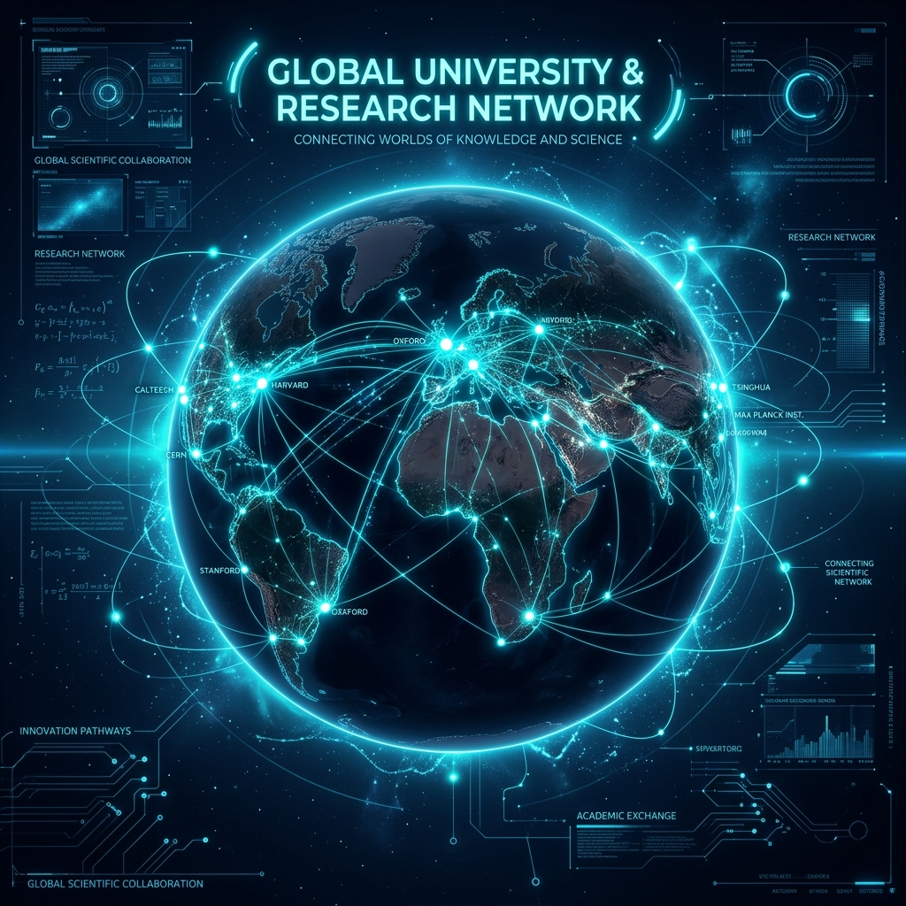
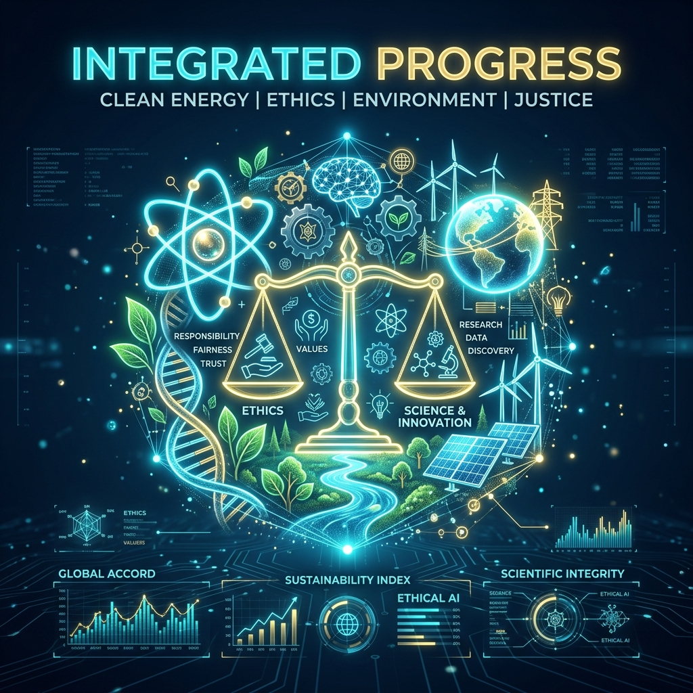
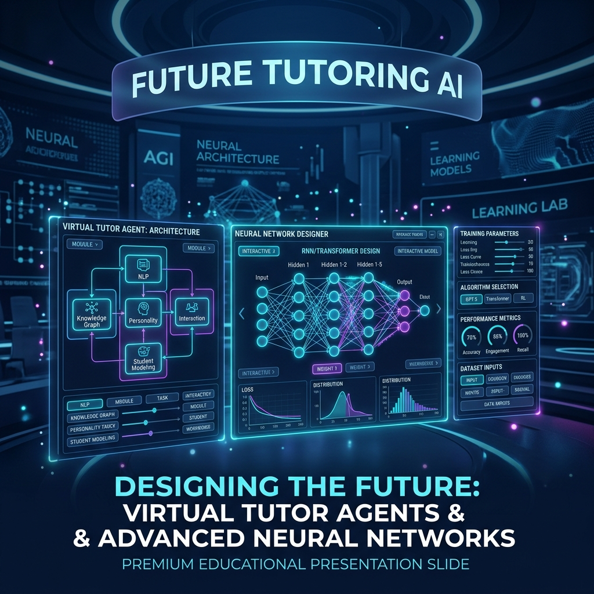

Síntesis Documental y Curaduría Inteligente
Uso de NotebookLM para la curaduría de información física, análisis epistémico y estructuración narrativa de guías didácticas.
Objetivo
Aprender a sintetizar conceptos de física y extraer ideas clave de currículos y artículos científicos mediante inteligencia artificial especializada para docentes.
Herramienta Principal
NotebookLM Studio: Herramienta central para la curaduría, generación de Audio Overviews y síntesis inteligente de fuentes documentales.
Ruta de Transformación Curricular
Explora el marco conceptual completo en 4 fases. Haz clic en las previsualizaciones de las portadas de las diapositivas para abrir las presentaciones interactivas completas.
IA-Navigator: Identificación de Ejes
El punto de partida técnico. Usamos modelos avanzados de lenguaje (Gemini) para mapear los estándares curriculares nacionales (MEN Colombia) e identificar los temas troncales de la física que se reformularán en grado 11.

Global-Search: Excelencia en la Enseñanza
Elevamos el nivel hacia estándares mundiales. Buscamos y contrastamos metodologías activas (Inquiry-Based Learning - IBL) y recursos simulados en laboratorios interactivos internacionales para nutrir el aula de física.

Ethical-Layer: Infusión Axiológica
Damos alma a los contenidos. Conectamos los fenómenos de la física con la realidad moral y social de los estudiantes mediante debates reflexivos y dilemas axiológicos estructurados.

Agent-Builder: El Docente-Arquitecto
El punto de consolidación. Diseñamos un prompt maestro para que Gemini actúe como un co-piloto pedagógico senior y asista de forma interactiva en la redacción de guías de laboratorio.

Taller del Docente-Arquitecto en NotebookLM
Utiliza la guía de planeación pedagógica en NotebookLM y ejecuta los siguientes prompts maestros en el chat para refinar tus recursos interactivos.
Sube la Planeación Curricular Maestra para establecer el contexto pedagógico.
"Basado en la Fase 4 de este documento, ayúdame a redactar un prompt avanzado para Gemini..."
"Aquí tienes la estructura de sistema para tu tutor: 'Actúa como un Diseñador Instruccional Senior. Vincula la Fase 3 ética con el MEN...'"
Genera audio resúmenes ultra realistas discutiendo el marco.
1. El Consultor de Metodología
Audio Overview: "Generen un Audio Overview donde dos consultores de diseño instruccional discutan las 4 fases de transformación de esta guía. Deben enfatizar por qué la 'Búsqueda de Excelencia' (Fase 2) y la 'Infusión Axiológica' (Fase 3) son las que realmente elevan el nivel del docente."
2. El Mentor de Agentes
Chat Prompt: "Basado en la Fase 4 de este documento, ayúdame a redactar un prompt avanzado para Gemini que actúe como mi tutor personal para diseñar laboratorios de física cuántica con enfoque ético."
3. Generador Multimedia
Video Overview: "Crea un video que presente la Fase 3 (Infusión Axiológica). Usa un tono filosófico e inspirador. Que hable sobre cómo la física nos enseña responsabilidad ante el universo."
Metas de Aprendizaje de la Sesión 3
¿Listo para seguir estructurando visualmente?
Una vez finalices tu síntesis de guías, pasa al diseño instruccional gráfico de recursos.